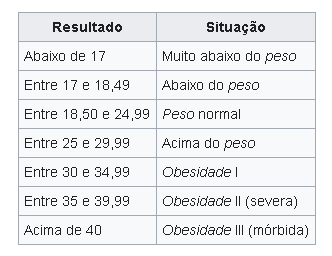

Para calcular seu IMC insira seu peso e sua altura e clique no botão calcular.
Como esses valores são calculados? O IMC é determinado pela divisão da massa do indivíduo pelo quadrado de sua altura, em que a massa está em quilogramas e a altura em metros.
Exemplo de IMC
Para uma pessoa com 90 quilogramas de massa e 1,75 metros de altura, teremos
Você pode utilizar a tabela abaixo para consultar o seu índice de massa corporal.
Índice considerado ideal para adultos, um IMC entre 20 e 22 indica a quantidade ideal, saudável de gordura corporal, o que está associado com maior tempo de vida e menor incidência de doenças graves. Coincidentemente, essa relação é o que muitas pessoas consideram ser «o mais esteticamente atraente». Entretanto, é importante ressaltar que um índice entre 22 e 25 também é considerado um intervalo bastante aceitável, pois está igualmente associado à boa saúde. Pesquisas recentes apontaram que um IMC entre 23 e 25 é considerado o que garante taxas de sobrevivência mais longas aos indivíduos. O autor Charles E. Phelps corrobora tal informação ao afirmar em um de seus livros:
«Tanto para mulheres como para homens, a melhor taxa de sobrevivência aparece nos grupos de pessoas cujo IMC está entre 23 e 25. O risco relativo aumenta para pessoas com números mais altos ou mais baixos que esse índice massa corporal tido como “mais seguro”.»